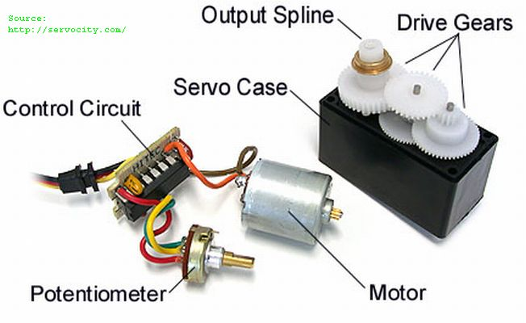
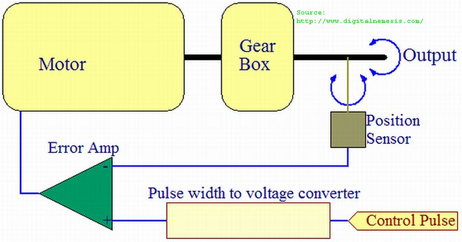
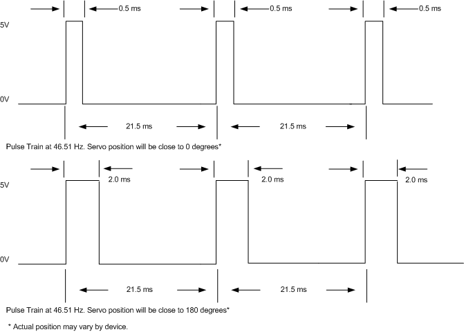
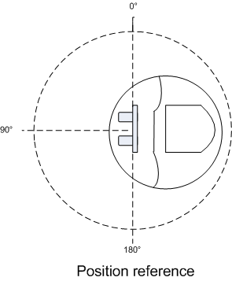

In lecture, you have studied pulse width modulation (PWM). This lab will explore the use of PWM to control the position of a servo attached to the VORTEX platform.
Submit answers to the following questions (see pgs 133-138 for register details User Guide, pg 22 (pg 28 of the actual pdf) of Servo Application Document)
Download the following files to a single folder on your U: drive (right-click and select ‘Save Target As’. Alternatively, download the zipped folder at the bottom of the page).

In a previous lab, you worked on controlling the motion of a stepper motor. In this lab, you will be exploring the control of a servo motor. This device is very common in remote control devices and robotics. The servo comes in two configurations. One configuration has a mechanical stop that restricts the servo to 180 degrees of motion. The second configuration allows 360 degrees of rotation. The servo used in lab only has 180 degrees of rotation.
One of the features of a servo is the ability to position the servo to an absolute position by signaling the control circuit with a pulse train consisting of a positive pulse having a specific width. Another feature is the feedback circuitry that keeps the servo in a specified position. This feedback is established by a pulse train with a constant pulse width. In our circumstances the turret mounted on the servo will experience minimal forces that would move the turret out of position, so the feedback feature is not necessary. However, if the servo was used to control rudder or wing flap position, forces would push the controlled surface out of position without feedback compensating for these forces.
In the documents provided in the pre-lab section you will find a discussion on the operational aspects of servo. One important idea that needs to be mentioned is the specification of the pulse trains supported by the servo. The servo supports a range of pulse train frequencies. The applications document suggests the low time of the pulse train can safely range from 10ms to 40ms. So combining this fact and the widths of the positive pulse ranging from 0.5ms to 2.0ms approximately, we can determine that a valid range of periods is 10.5 ms to 40.5ms. In other words, the frequency of the pulse train can range from 24.7 Hz to 95.23 Hz. Any pulse train frequency in the center of this range is fine. A frequency of 46.51 Hz has been chosen for this lab to be consistent with the applications document.

The ATmega128 microcontroller supports a variety of PWM resolution options. One set of options fix the TOP value to a predefined value that is at a 2^n-1 boundary where n is either 8, 9 or 10 bits. There would be no way of producing a 46.51Hz with these predefined TOP values. Another more flexible option is to specify the TOP value. There are two ways to load a TOP value. One way is to load the OCR3A register with an arbitrary TOP value or load the TOP value in ICR3. These two options have tradeoffs. Using the first option results in losing channel A as a viable PWM signal source, but the buffering circuitry supports adjustment of the TOP value while PWM is active. The second option does not support dynamic TOP values and effectively disables the input capture unit, but all three output compare channels are available for PWM signal generation. In this lab, OCR3A will be used to hold the arbitrary TOP value you have calculated in the pre-lab.
On page 125 of the ATmega 128 user guide, we see that resolution is directly proportional to the size of the TOP value. In order to get the highest possible resolution, we will want a large value in OCR3A for this lab. Resolution translates to how precisely we can control the position of the servo. The counter values between 0 and TOP produce a range of pulse widths that is beyond what is supported by the servo, but as more values are possible between 0 and TOP the granularity in the supported range of pulse widths also increases. This granularity in turn translates to how granular the servo movements can be controlled. The precision of the waveform generation circuitry and the precision of the electromechanical components of the servo will ultimately determine if increasing resolution in the counter will translate to increased precision in servo movement control .
Frequency in Fast PWM mode is governed by the system clock (fixed at 16
MHz), prescaler, and the TOP value. We want to maximize control
resolution, so we need to pick a prescaler out of the available list
(1,8,64,256,1024) that will result in the generation of pulse train with
frequency of 46.51 Hz. On page 127 of the ATmega 128 user guide we see
that TOP values and the prescaler reduce the possible pulse train
frequency. So for a fixed frequency to be generated, the prescaler value
must decline as the TOP value increases. Picking a TOP value and
prescaler is a challenge of finding two unknowns with one equation.
Although we do not know the exact value of TOP yet, we do know we want
resolution maximized. This means TOP will be large, which means the
prescaler will be in the lower end of the range. By fixing the prescaler
to a low value and solving for TOP in the equation on page 127, we can iteratively
determine what TOP and the prescaler should be for our desired pulse train.

Quick Tips
- In order to ensure there is a common understanding of what the position 0 and
180 degrees are relative to the VORTEX platform, this diagram puts these
designations in perspective of the VORTEX.
- For this lab, the control signal for the servo will be Timer 3 channel B,
which is mapped to pin PE4 and the SERV3B header on the based board of the
VORTEX.
- Timer 1 is not being used in this lab, because we have the Ping))) sensor
attached to it. There is the potential that the
prescaler choices made for the two device applications conflict.
- Testing will show that pulse widths translate to different absolute positions for each servo. It is suggested that you document what VORTEX platform you are using and develop a method to compensate if a different device needs to be used.
- Most of the servos available in lab have a linear relationship between timer count value and servo position in units of degree. By determining the count value for degree 0 and degree 180 a conversion factor (ratio of the difference in counts over the range of motion in degrees) can be used to convert a desired degree position into its corresponding counter value.
- Since timer 3 is a 16 bit timer, OCR3A is really composed of 2 8-bit registers. The compiler provides OCR3A as convenient handle to allow you to ignore the register management details necessary to load and retrieve 16 bit values across two 8-bit registers.
- Make sure you understand how Fast PWM (Pulse width modulation) works in either inverted or non-inverted mode. Read paragraph on the bottom pg 124 of the User Guide.
- See pgs 133-138 for register details User Guide.
Develop a servo positioning API that accepts a counter value and positions the servo. For the purposes of demonstration, please use a counter value that will turn the servo close to zero degrees. The position may not be true 0 degrees, but that is okay for this part of the lab.
There is no way to know programmatically whether the servo is in position. Positioning the servo 120 degrees away from its current position will take longer than positioning 10 degrees away. So, your function is responsible for returning a value indicating the servo has reached position. This will require you to judge how long to safely wait prior to returning from this function. Keep in mind being overly conservative will slow down servo movement sequences and the speed at which you can ping in new directions. However, being overly optimistic will result in ping measurement errors, since you will be pinging before the sensor has reached position.
Demo the program execution on the board to your TA.
Develop a program that will increment the output compare comparison value and position the servo relative to that count value. Display the counter value on the LCD. Using pushbutton SW1 to alter the count value by so as to move the servo 1 degree. Using pushbutton SW2 to alter the count value so as to move the servo 2.5 degrees. Using pushbutton SW3 to alter the count value so as to move the servo 5 degrees. Using SW4 to switch between incrementing and decrementing. Set your initial adjustment direction to incrementing. Set you initial counter value to 800. Indicate on the LCD whether the program is in incrementing or decrementing mode.
Having completed the calibration program, identify the count value necessary for 0, 45, 90, 135 and 180 degrees. Use the protractor and "calibration pointer" provided.
Note: This will not be the last time you perform calibration. Every servo is slightly different, so you may need to re-calibrate if you can not use the VORTEX you were using before.
Demo the program execution on the board and calibration methodology to your TA.
Suggestion: All these multi-digit values need to be translated into strings before displaying them. You might find the lprintf useful. This function works in much the same way as printf, except that is will clear and then print to the LCD screen.
Fill out a lab feedback form: Online Form
|
Files |
Description |
|
Files required for lab 8 |
|
|
Evaluation form for Lab 8 |
|
|
Tell us what you think of the lab (feedback forms) |